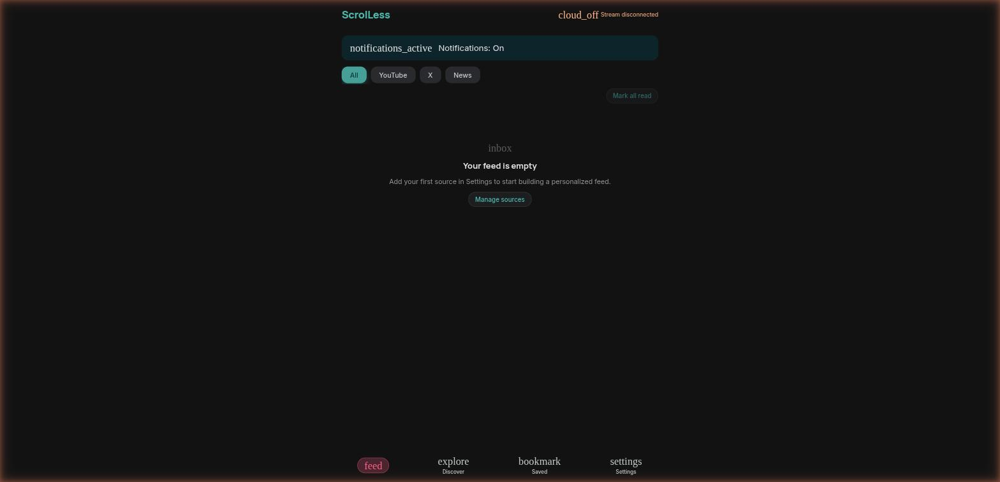

ScrolLess

An agentic content feed aggregator built around the pattern described in
Agentic Content Apps — A New Pattern.
An external AI agent scrapes the user's followed platforms, encrypts the payload, and
delivers it to the device via a blind relay server. The Preact PWA reads from
IndexedDB and renders a unified feed — no direct platform integrations in the app itself.
Currently in active development with the core delivery pipeline working.